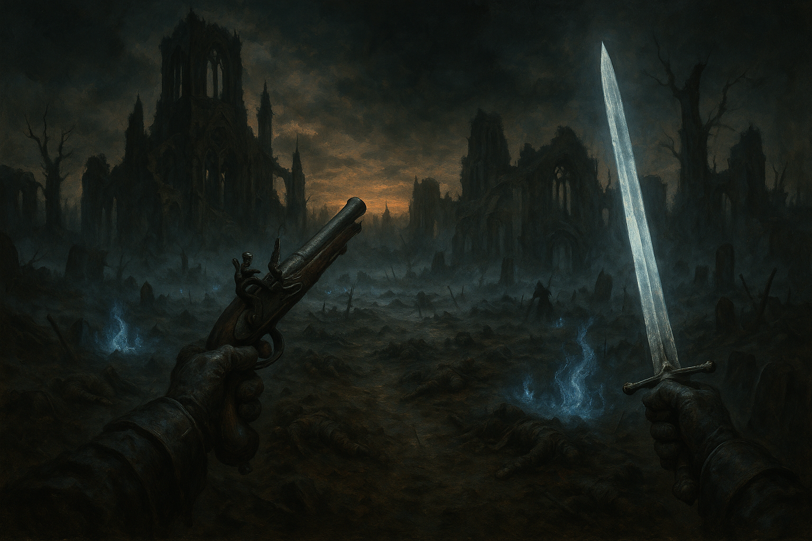

1位

Valor Mortis
『Ghostrunner』シリーズを手掛けたOne More Levelが贈る、一人称視点のソウルライクARP G。ナポレオン戦争を舞台にした異世界ヨーロッパで、戦場に命を落とした元兵士ウィリアムが超自然の力を携えて蘇る。パリィ・フィニッシャー・フリントロック銃を組み合わせた独自の戦闘システムと、ペストに侵食された19世紀ゴシックな世界観が見どころ。
おすすめ理由：ソウルライクでは珍しい一人称視点を採用し、歴史とホラーが融合した圧倒的な没入感が魅力。Game Pass Ultimate加入者は追加料金なしでプレイ可能な点も見逃せない。